Note
Go to the end to download the full example code.
Bayesian Joint Inversion: Gravity and EnMap¶
This tutorial demonstrates a joint Bayesian inversion combining two disparate data types: 1. Gravity Data: Volumetric measurements sensitive to subsurface density contrasts. 2. EnMap Satellite Data: Surface lithology classifications sensitive to the intersection
of geological units with topography.
Joint inversion is a powerful technique to reduce non-uniqueness in geophysical models. By combining datasets that have different sensitivities, we can better constrain the subsurface architecture.
What are we doing?
We’re performing Bayesian inference on a geological model using both gravity measurements and EnMap surface classifications. The goal is to estimate geological parameters such as:
Dips: Orientation angles of geological layers (degrees).
Densities: Rock densities for different lithological units (g/cm³).
Why Bayesian Inference?
Bayesian inference provides several advantages over traditional deterministic approaches:
Posterior probability distributions: Not just point estimates, but full probability distributions that quantify uncertainty in our parameter estimates.
Uncertainty quantification: Explicit characterization of what we know and don’t know about the subsurface.
Prior knowledge incorporation: Ability to incorporate geological expertise and physical constraints into the inversion.
Data Integration: A natural framework for combining multiple datasets with different noise characteristics and measurement scales.
The Bayesian Framework
In Bayesian joint inversion, we seek the posterior distribution of parameters \(\theta\) given multiple datasets \(y_{grav}\) and \(y_{enmap}\) using Bayes’ theorem:
In log-space, this becomes an additive process:
The Forward Model
We have two distinct forward models mapping the same parameters \(\theta\) to different observation spaces:
Gravity Forward Model: \(y_{grav} = f_{grav}(\theta) + \epsilon_{grav}\) Maps density distributions to gravitational acceleration.
EnMap Forward Model: \(y_{enmap} = f_{enmap}(\theta) + \epsilon_{enmap}\) Maps unit boundaries to surface lithology classifications.
Key Concepts in this Tutorial:
Multi-Grid Configuration: How to handle different observation grids (Centered grid for gravity, Custom grid for EnMap) within a single GemPy model.
Joint Likelihood Formulation: Defining a Pyro model with multiple likelihood functions.
Likelihood Balance Check: A critical diagnostic step to ensure one dataset doesn’t statistically “drown out” the other.
Joint Parameter Inference: Simultaneously estimating layer dips and rock densities.
import os
import numpy as np
import matplotlib.pyplot as plt
import torch
import pyro
import pyro.distributions as dist
import arviz as az
from pathlib import Path
import inspect
import gempy as gp
import gempy_probability as gpp
import gempy_viewer as gpv
from gempy_probability.core.samplers_data import NUTSConfig
# Import Mineye-specific helpers
from mineye.config import paths
from mineye.GeoModel.model_one.model_setup import baseline, setup_geomodel, read_gravity
from mineye.GeoModel.model_one.probabilistic_model import normalize
from mineye.GeoModel.model_one.joint_probabilistic_model import joint_set_priors
from mineye.GeoModel.model_one.probabilistic_model_likelihoods import (
generate_multigravity_likelihood_hierarchical_per_station,
enmap_likelihood_fn
)
from mineye.GeoModel.model_one.inference_diagnostics import check_mcmc_quality, check_likelihood_balance
from mineye.GeoModel.model_one.visualization import (
generate_gravity_uncertainty_plots,
gempy_viz,
plot_probability_heatmap, probability_fields_for
)
# Set random seeds for reproducibility
seed = 42
pyro.set_rng_seed(seed)
torch.manual_seed(seed)
np.random.seed(seed)
Setting Backend To: AvailableBackends.PYTORCH
1. Setup Model Extent and Load Data¶
Model Configuration
We define the spatial extent of our geological model and the resolution (refinement). Higher refinement leads to more accurate results but increases computation time.
extent = [-707521, -675558, 4526832, 4551949, -500, 505]
refinement = 5
mod_or_path = paths.get_orientations_path()
mod_pts_path = paths.get_points_path()
geophysical_dir = paths.get_geophysical_dir()
# Create Initial GemPy Model
simple_geo_model = gp.create_geomodel(
project_name='joint_inversion',
extent=extent,
refinement=refinement,
importer_helper=gp.data.ImporterHelper(
path_to_orientations=mod_or_path,
path_to_surface_points=mod_pts_path,
)
)
gp.map_stack_to_surfaces(
gempy_model=simple_geo_model,
mapping_object={"Tournaisian_Plutonites": ["Tournaisian Plutonites"]}
)
2. Setup Gravity Observations¶
What is gravity data?
Gravity data measures small variations in the Earth’s gravitational field caused by density differences in the subsurface.
Units: μGal (microgal)
gravity_data, observed_gravity_ugal = read_gravity(geophysical_dir)
print(f"\nGravity observations:")
print(f" Number of measurements: {len(observed_gravity_ugal)}")
print(f" Range: {observed_gravity_ugal.min():.1f} to {observed_gravity_ugal.max():.1f} μGal")
print(f" Mean: {observed_gravity_ugal.mean():.1f} μGal")
geo_model, xy_ravel = setup_geomodel(gravity_data, simple_geo_model)
geo_model.interpolation_options.sigmoid_slope = 100
Gravity observations:
Number of measurements: 20
Range: 11717.0 to 39037.0 μGal
Mean: 25535.6 μGal
Setting Backend To: AvailableBackends.PYTORCH
Using actual gravity measurement locations...
Using 20 actual measurement points
Computing forward gravity model...
Setting up centered grid...
Active grids: GridTypes.OCTREE|CENTERED|NONE
Calculating gravity gradient...
Configuring geophysics input...
Active grids: GridTypes.CENTERED|NONE
Setting Backend To: AvailableBackends.PYTORCH
3. Setup EnMap Observations (Custom Grid)¶
What is EnMap data?
EnMap (Environmental Mapping and Analysis Program) is a hyperspectral satellite mission. In this context, we use it as a categorical surface classification of rock types.
Data Representation: Categorical labels mapping to geological units.
# For this example, we'll assume the files exist in the same folder as this script
current_dir = Path(inspect.getfile(inspect.currentframe())).parent.resolve()
xyz_path = os.path.join(current_dir, 'central_xyz.npy')
labels_path = os.path.join(current_dir, 'central_labels.npy')
if not os.path.exists(xyz_path):
# Fallback to dummy data if real data isn't found for the sphinx build
print("Warning: Real EnMap data not found. Using dummy data for demonstration.")
xyz_enmap = np.array([[-690000, 4540000, 500]])
labels_enmap = np.array([1])
else:
xyz_enmap = np.load(xyz_path)
labels_enmap = np.load(labels_path)
labels_enmap[labels_enmap == 2] = 1 # Normalize labels to match model units
print(f"\nEnMap observations:")
print(f" Number of pixels: {len(labels_enmap)}")
print(f" Categories: {np.unique(labels_enmap)}")
# Configure Custom Grid for EnMap
gp.set_custom_grid(geo_model.grid, xyz_enmap)
# Activate both Centered (Gravity) and Custom (EnMap) grids
gp.set_active_grid(
grid=geo_model.grid,
grid_type=[geo_model.grid.GridTypes.CENTERED, geo_model.grid.GridTypes.CUSTOM],
reset=True
)
EnMap observations:
Number of pixels: 57
Categories: [0 1]
Active grids: GridTypes.CUSTOM|CENTERED|NONE
Active grids: GridTypes.CUSTOM|CENTERED|NONE
Grid(values=array([[-6.86311507e+05, 4.53422704e+06, 1.31536606e+02],
[-6.84340294e+05, 4.53983741e+06, 3.46467194e+02],
[-6.96432927e+05, 4.54468963e+06, 3.20259308e+02],
...,
[-6.78457499e+05, 4.53496092e+06, -8.63073923e+02],
[-6.78457499e+05, 4.53496092e+06, -1.34724562e+03],
[-6.78457499e+05, 4.53496092e+06, -2.02000000e+03]],
shape=(38777, 3)), length=array([], dtype=float64), _octree_grid=RegularGrid(resolution=array([512, 400, 32]), extent=array([-7.075210e+05, -6.755580e+05, 4.526832e+06, 4.551949e+06,
-5.000000e+02, 5.050000e+02]), values=array([[-7.07489786e+05, 4.52686340e+06, -4.84296875e+02],
[-7.07489786e+05, 4.52686340e+06, -4.52890625e+02],
[-7.07489786e+05, 4.52686340e+06, -4.21484375e+02],
...,
[-6.75589214e+05, 4.55191760e+06, 4.26484375e+02],
[-6.75589214e+05, 4.55191760e+06, 4.57890625e+02],
[-6.75589214e+05, 4.55191760e+06, 4.89296875e+02]],
shape=(6553600, 3)), mask_topo=array([], shape=(0, 3), dtype=bool), _transform=None, _base_resolution=array([32, 25, 2])), _dense_grid=None, _custom_grid=CustomGrid(values=array([[-6.86311507e+05, 4.53422704e+06, 1.31536606e+02],
[-6.84340294e+05, 4.53983741e+06, 3.46467194e+02],
[-6.96432927e+05, 4.54468963e+06, 3.20259308e+02],
[-6.91163723e+05, 4.54302168e+06, 2.81383545e+02],
[-6.89533682e+05, 4.53085323e+06, 3.19174347e+02],
[-6.95447321e+05, 4.53923089e+06, 4.63476868e+02],
[-6.91504895e+05, 4.53479566e+06, 2.90548767e+02],
[-6.81648830e+05, 4.53252118e+06, 1.20361305e+02],
[-6.94916609e+05, 4.53570545e+06, 3.06075592e+02],
[-7.05151754e+05, 4.54359030e+06, 3.37633240e+02],
[-7.02460290e+05, 4.54700201e+06, 4.37251770e+02],
[-7.00868156e+05, 4.54920067e+06, 5.18035645e+02],
[-6.98025061e+05, 4.53892762e+06, 4.07593109e+02],
[-7.01626315e+05, 4.54396938e+06, 3.42894135e+02],
[-6.98138785e+05, 4.53225582e+06, 3.96869446e+02],
[-7.01702131e+05, 4.53005716e+06, 3.33882172e+02],
[-7.05341293e+05, 4.53399959e+06, 4.36949951e+02],
[-7.04279871e+05, 4.53619825e+06, 4.22504150e+02],
[-6.78957366e+05, 4.53585708e+06, 3.16025940e+02],
[-6.77668496e+05, 4.53824528e+06, 3.09397583e+02],
[-6.82558621e+05, 4.52861666e+06, 2.47029175e+02],
[-6.78995274e+05, 4.54571314e+06, 3.88674500e+02],
[-7.04962214e+05, 4.53877599e+06, 3.19339355e+02],
[-6.80094604e+05, 4.52941273e+06, 2.73347809e+02],
[-6.83657951e+05, 4.54529616e+06, 3.62819458e+02],
[-6.96849914e+05, 4.52865457e+06, 2.98927002e+02],
[-6.86576862e+05, 4.54685038e+06, 4.12333984e+02],
[-7.01323052e+05, 4.53976160e+06, 3.07448608e+02],
[-6.89950669e+05, 4.53972369e+06, 2.46116455e+02],
[-6.80056696e+05, 4.54321122e+06, 3.16967072e+02],
[-6.95030333e+05, 4.54817716e+06, 2.64292694e+02],
[-7.03673344e+05, 4.54525825e+06, 4.04202576e+02],
[-6.95636860e+05, 4.53134603e+06, 2.56243866e+02],
[-7.05038030e+05, 4.54040603e+06, 3.10769226e+02],
[-7.01019788e+05, 4.53657733e+06, 2.82767090e+02],
[-6.79753433e+05, 4.53468193e+06, 2.85022522e+02],
[-6.99996274e+05, 4.53172511e+06, 4.26705627e+02],
[-6.97342718e+05, 4.53616034e+06, 2.89172455e+02],
[-6.89761129e+05, 4.54499289e+06, 3.07890228e+02],
[-6.79412261e+05, 4.53733549e+06, 3.21680176e+02],
[-6.94006819e+05, 4.53445449e+06, 3.16392212e+02],
[-6.84302386e+05, 4.54324913e+06, 2.76777466e+02],
[-6.85325900e+05, 4.54582687e+06, 3.95587402e+02],
[-6.86842218e+05, 4.54355239e+06, 3.20481750e+02],
[-6.95902216e+05, 4.54203607e+06, 1.92909485e+02],
[-7.03445896e+05, 4.53172511e+06, 3.84196045e+02],
[-7.05379201e+05, 4.52876829e+06, 2.67404938e+02],
[-6.94764978e+05, 4.52854085e+06, 2.83653137e+02],
[-6.99693010e+05, 4.54552360e+06, 3.34157135e+02],
[-6.99768826e+05, 4.54787390e+06, 2.46570984e+02],
[-7.04393595e+05, 4.53471984e+06, 4.75726532e+02],
[-6.99996274e+05, 4.54290796e+06, 3.11612671e+02],
[-6.87676193e+05, 4.52945064e+06, 2.93266357e+02],
[-6.84567741e+05, 4.52929901e+06, 3.24543060e+02],
[-6.83278871e+05, 4.53161139e+06, 2.89459503e+02],
[-7.05682465e+05, 4.54836670e+06, 3.66013245e+02],
[-6.88282720e+05, 4.53183884e+06, 1.89883438e+02]])), _topography=None, _sections=None, _centered_grid=CenteredGrid(centers=array([[-7.05136851e+05, 4.53298811e+06, 5.00000000e+02],
[-6.97556326e+05, 4.54392817e+06, 5.00000000e+02],
[-6.89202793e+05, 4.52921231e+06, 5.00000000e+02],
[-6.90716496e+05, 4.54251429e+06, 5.00000000e+02],
[-7.02871591e+05, 4.54468798e+06, 5.00000000e+02],
[-6.96778079e+05, 4.53456324e+06, 5.00000000e+02],
[-7.05932225e+05, 4.54103010e+06, 5.00000000e+02],
[-6.97759999e+05, 4.53020714e+06, 5.00000000e+02],
[-6.89698506e+05, 4.54704240e+06, 5.00000000e+02],
[-7.06108138e+05, 4.53003321e+06, 5.00000000e+02],
[-7.00368871e+05, 4.54002472e+06, 5.00000000e+02],
[-6.94523994e+05, 4.54804049e+06, 5.00000000e+02],
[-6.91953387e+05, 4.53651263e+06, 5.00000000e+02],
[-6.94228488e+05, 4.53198213e+06, 5.00000000e+02],
[-6.94478080e+05, 4.54018665e+06, 5.00000000e+02],
[-6.99853919e+05, 4.54746797e+06, 5.00000000e+02],
[-7.01111262e+05, 4.53124209e+06, 5.00000000e+02],
[-7.02545850e+05, 4.53694946e+06, 5.00000000e+02],
[-7.05547079e+05, 4.54714491e+06, 5.00000000e+02],
[-6.80457499e+05, 4.52996092e+06, 5.00000000e+02]]), resolution=array([10, 10, 15]), radius=array([2000, 5000, 2000]), kernel_grid_centers=array([[-2000. , -5000. , -120. ],
[-2000. , -5000. , -144. ],
[-2000. , -5000. , -153.34789186],
...,
[ 2000. , 5000. , -1363.07392302],
[ 2000. , 5000. , -1847.2456152 ],
[ 2000. , 5000. , -2520. ]], shape=(1936, 3)), left_voxel_edges=array([[ 683.77223398, 1709.43058496, -12. ],
[ 683.77223398, 1709.43058496, -12. ],
[ 683.77223398, 1709.43058496, -4.67394593],
...,
[ 683.77223398, 1709.43058496, -174.22571507],
[ 683.77223398, 1709.43058496, -242.08584609],
[ 683.77223398, 1709.43058496, -336.3771924 ]], shape=(1936, 3)), right_voxel_edges=array([[ 683.77223398, 1709.43058496, -12. ],
[ 683.77223398, 1709.43058496, -4.67394593],
[ 683.77223398, 1709.43058496, -6.49442681],
...,
[ 683.77223398, 1709.43058496, -242.08584609],
[ 683.77223398, 1709.43058496, -336.3771924 ],
[ 683.77223398, 1709.43058496, -336.3771924 ]], shape=(1936, 3))), _transform=None, _octree_levels=-1)
4. Normalization and Likelihood Setup¶
Gravity Normalization
Since gravity data often has a regional component, we align our forward model to the observations using a baseline model run.
norm_params = normalize(
baseline_fw_gravity_np=baseline(geo_model),
observed_gravity=observed_gravity_ugal,
method="align_to_reference"
)
============================================================
COMPUTING BASELINE FORWARD MODEL
============================================================
Computing gravity with mean/initial prior parameters...
Baseline forward model statistics:
Mean: 24.52 μGal
Std: 4.86 μGal
Min: 8.20 μGal
Max: 28.58 μGal
============================================================
Computing align_to_reference alignment parameters...
Alignment params: {'method': 'align_to_reference', 'reference_mean': 25535.6, 'reference_std': 8288.689820472231, 'baseline_forward_mean': -24.516145854322723, 'baseline_forward_std': 4.8571060383169495}
Step 5: Define Prior Distributions¶
Prior Knowledge in Bayesian Inference
Priors encode our geological knowledge before seeing the data. We define priors for layer dips and rock densities.
Prior on Dips
We use a Normal distribution for orientations:
Prior on Density
We define density contrasts relative to a background density (2.67 g/cm³):
model_priors = {
'dips' : dist.Normal(
loc=(torch.ones(geo_model.orientations_copy.xyz.shape[0]) * 10),
scale=torch.tensor(10, dtype=torch.float64)
).to_event(1),
'density': dist.Normal(
loc=(torch.tensor([2.9 - 2.67, 2.3 - 2.67])),
scale=torch.tensor(0.15),
).to_event(1)
}
Step 6: Define Joint Likelihood¶
The joint likelihood is the product of individual likelihoods:
Gravity Likelihood: Hierarchical per-station noise model. EnMap Likelihood: Categorical distribution for surface units.
gravity_likelihood = generate_multigravity_likelihood_hierarchical_per_station(norm_params)
enmap_likelihood = enmap_likelihood_fn
Inspecting the Likelihood Functions
To understand exactly what happens inside, we can inspect the source code:
print("Gravity Likelihood Function:")
print("=" * 30)
print(inspect.getsource(generate_multigravity_likelihood_hierarchical_per_station))
print("\nEnMap Likelihood Function:")
print("=" * 30)
print(inspect.getsource(enmap_likelihood_fn))
Gravity Likelihood Function:
==============================
def generate_multigravity_likelihood_hierarchical_per_station(norm_params):
"""
Per-station noise with hierarchical structure.
Best for: Different stations with unknown individual noise levels.
"""
def likelihood_fn(solutions: gp.data.Solutions) -> dist.Distribution:
simulated_geophysics = align_forward_to_observed(-solutions.gravity, norm_params)
pyro.deterministic(r'$\mu_{gravity}$', simulated_geophysics.detach())
n_stations = simulated_geophysics.shape[0]
# Global hyperprior on typical noise level
mu_log_sigma = pyro.sample(
"mu_log_sigma",
dist.Normal(
torch.tensor(np.log(5000.0), dtype=torch.float64),
torch.tensor(0.5, dtype=torch.float64)
)
)
# How much stations vary from each other
tau_log_sigma = pyro.sample(
"tau_log_sigma",
dist.HalfNormal(torch.tensor(0.5, dtype=torch.float64))
)
# Per-station noise (centered on global mean)
log_sigma_stations = pyro.sample(
"log_sigma_stations",
dist.Normal(
mu_log_sigma.expand([n_stations]),
tau_log_sigma
).to_event(1)
)
sigma_stations = torch.exp(log_sigma_stations)
pyro.deterministic("sigma_stations", sigma_stations)
return dist.Normal(simulated_geophysics, sigma_stations).to_event(1)
return likelihood_fn
EnMap Likelihood Function:
==============================
def enmap_likelihood_fn(solutions: gp.data.Solutions):
output_center: "gempy_engine.core.data.interp_output.InterpOutput" = solutions.octrees_output[0].last_output_center
scalar_field_at_custom_grid = output_center.exported_fields.scalar_field[output_center.grid.custom_grid_slice]
if not isinstance(scalar_field_at_custom_grid, torch.Tensor):
scalar_field_at_custom_grid = torch.tensor(scalar_field_at_custom_grid, dtype=torch.float64)
# DEFINE YOUR BOUNDARIES HERE
# These should match the isovalues of your interfaces.
# If your model is normalized, they might be roughly integers or fixed floats.
# Example: If Unit 0 is < 1.0, Unit 1 is 1.0 to 2.0, Unit 2 is > 2.0
# boundaries = torch.tensor([1.0, 2.0], dtype=torch.float64)
boundaries = torch.tensor(solutions.scalar_field_at_surface_points, dtype=torch.float64)
# Calculate probabilities
probs = _get_ordinal_probs(scalar_field_at_custom_grid, boundaries, temperature=0.1)
# 2. Save the class probabilities (The "Confidence")
# This will be shape (n_points, n_classes)
pyro.deterministic("probs_pred", probs.detach())
# 3. (Optional) Save the boundaries if they change per iteration
pyro.deterministic("boundaries_pred", boundaries)
# Use Categorical directly with probabilities (no need for logits)
return dist.Categorical(probs=probs).to_event(1)
Probabilistic Model Creation¶
We combine everything using make_gempy_pyro_model.
Internal Workflow Diagram:
Sample θ (Dips, Densities)
↓
joint_set_priors(θ) → Update GeoModel
↓
Forward Model Computation (Gravity + Custom Grid)
↓
[Likelihood 1 (Gravity), Likelihood 2 (EnMap)]
↓
p(data | θ) → MCMC Proposes Next θ
prob_model = gpp.make_gempy_pyro_model(
priors=model_priors,
set_interp_input_fn=joint_set_priors,
likelihood_fn=[gravity_likelihood, enmap_likelihood],
obs_name="Joint_Obs"
)
# Prepare observed data tensors
gravity_obs_tensor = torch.tensor(observed_gravity_ugal, dtype=torch.float64)
enmap_obs_tensor = torch.tensor(labels_enmap, dtype=torch.float64)
joint_obs = [gravity_obs_tensor, enmap_obs_tensor]
Setting Backend To: AvailableBackends.PYTORCH
5. Check Likelihood Balance¶
This is a crucial step! We calculate the log-probabilities of each dataset at the starting parameters to see if one dominates.
print("\n--- Performing Likelihood Balance Check ---")
check_likelihood_balance(
prob_model=prob_model,
geo_model=geo_model,
y_obs_list=joint_obs
)
--- Performing Likelihood Balance Check ---
--- Likelihood Balance Check ---
EnMap Log-Likelihood: -40.33
Gravity Log-Likelihood: -356.12
Ratio (Gravity / EnMap): 8.8x
STATUS: Balanced. Both datasets should contribute.
6. Run Joint Inference (NUTS)¶
We use the No-U-Turn Sampler (NUTS), a state-of-the-art MCMC algorithm.
Configuration Parameters: - num_samples: Number of posterior samples to collect. - warmup_steps: Iterations for the sampler to adapt its parameters. - target_accept_prob: Target acceptance rate (0.8 is usually a good balance). - step_size: Initial integration step size.
RUN_SIMULATION = False
if RUN_SIMULATION:
print("Running joint prior predictive...")
prior_data = gpp.run_predictive(
prob_model=prob_model,
geo_model=simple_geo_model,
y_obs_list=joint_obs,
n_samples=200,
plot_trace=True
)
print("\nRunning Joint NUTS Inference...")
# Reduced samples for tutorial speed; increase for production
data = gpp.run_nuts_inference(
prob_model=prob_model,
geo_model=geo_model,
y_obs_list=joint_obs,
config=NUTSConfig(
num_samples=200,
warmup_steps=200,
target_accept_prob=0.8
),
plot_trace=True,
run_posterior_predictive=True
)
else:
# Get the directory of the current file
current_dir = Path(inspect.getfile(inspect.currentframe())).parent.resolve()
data_path = current_dir / "arviz_data_joint_feb2026.nc"
if not data_path.exists():
raise FileNotFoundError(
f"Data file not found at {data_path}. "
f"Please run the simulation first with RUN_SIMULATION=True"
)
# Read the data file
data = az.from_netcdf(str(data_path))
print(f" Loaded inference results from {data_path}")
Loaded inference results from /home/leguark/PycharmProjects/Mineye-Terranigma/examples/02_probabilistic_modeling/arviz_data_joint_feb2026.nc
7. Analyze Results¶
Posterior Analysis
We evaluate the quality of our inference by looking at the trace plots and posterior distributions.
Trace Plot: Should show “fuzzy caterpillar” chains indicating good mixing. Posterior Distributions: Should be narrower than the priors, indicating that the data has informed our knowledge.
# Trace Plot
az.plot_trace(data, var_names=["dips", "density"])
plt.show()
# Posterior Distributions
az.plot_posterior(data, var_names=["density"])
plt.title("Posterior Densities (Joint Inversion)")
plt.show()
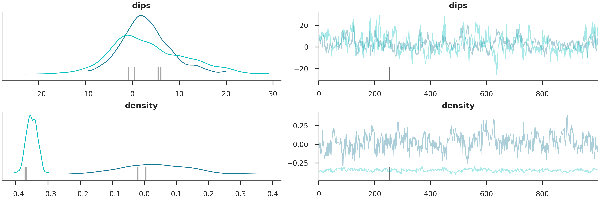
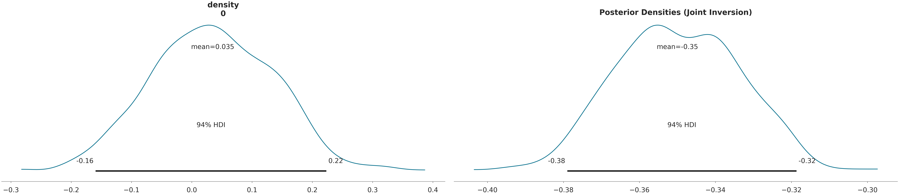
Predictive Checks
We check how well our posterior models can replicate the observed data.
# Probability Heatmap (EnMap predictive check)
# This shows the probability of each unit at the surface.
plot_probability_heatmap(data, 'posterior_predictive')
plt.show()
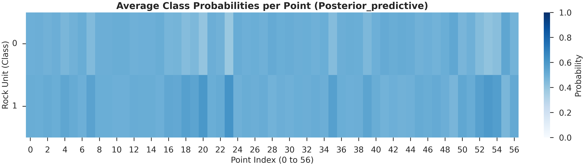
3D Entropy Visualization
We can also visualize uncertainty in 3D by injecting the entropy field back into the GemPy solutions object.
Note: The 3D visualization is already handled inside probability_fields_for() by injecting the entropy field and calling gpv.plot_3d.
# Resetting the model
simple_geo_model = gp.create_geomodel(
project_name='joint_inversion',
extent=extent,
refinement=refinement,
importer_helper=gp.data.ImporterHelper(
path_to_orientations=mod_or_path,
path_to_surface_points=mod_pts_path,
)
)
# Prior Probability Fields
print("\nComputing prior probability fields...")
topography_path = paths.get_topography_path()
probability_fields_for(
geo_model=simple_geo_model,
inference_data=data.prior,
topography_path=topography_path
)
# Posterior Probability Fields
if hasattr(data, 'posterior'):
print("\nComputing posterior probability fields...")
probability_fields_for(
geo_model=simple_geo_model,
inference_data=data.posterior,
topography_path=topography_path
)
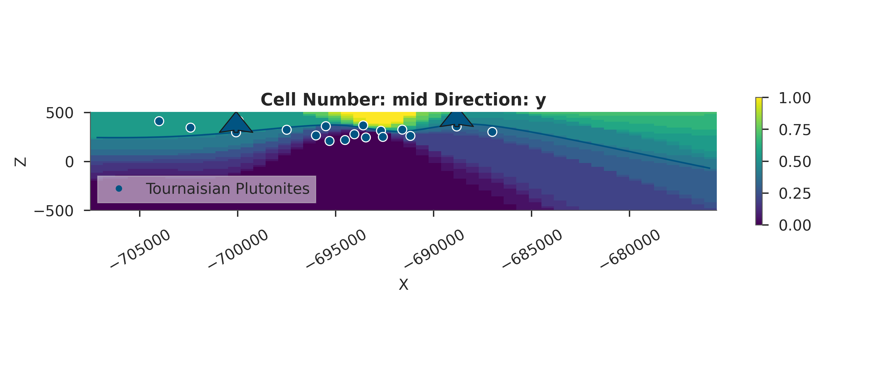
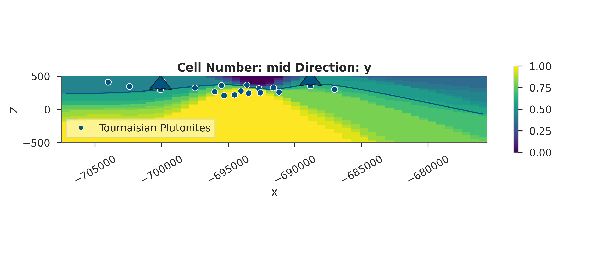
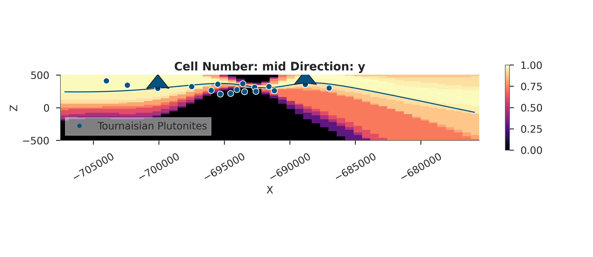
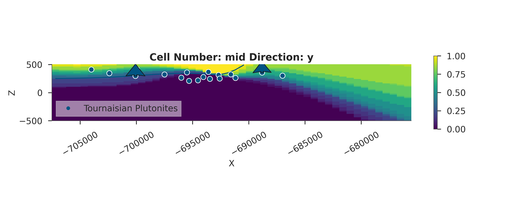
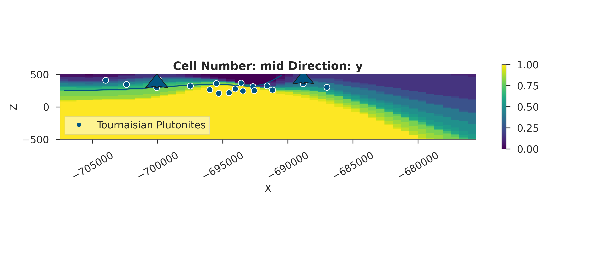
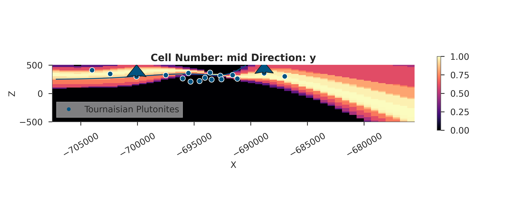
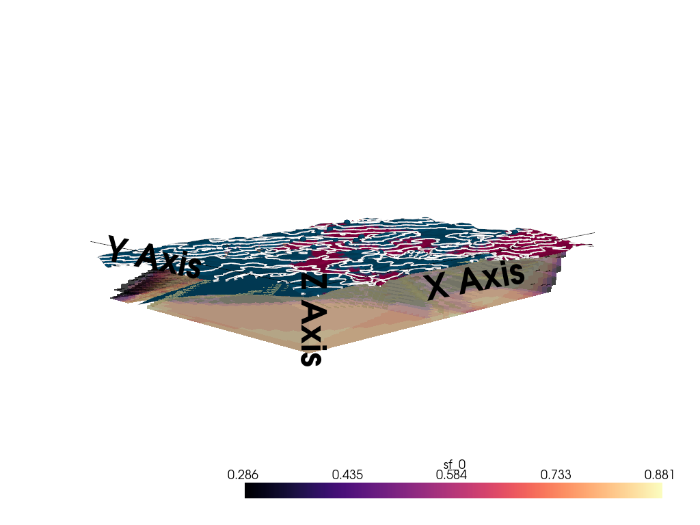
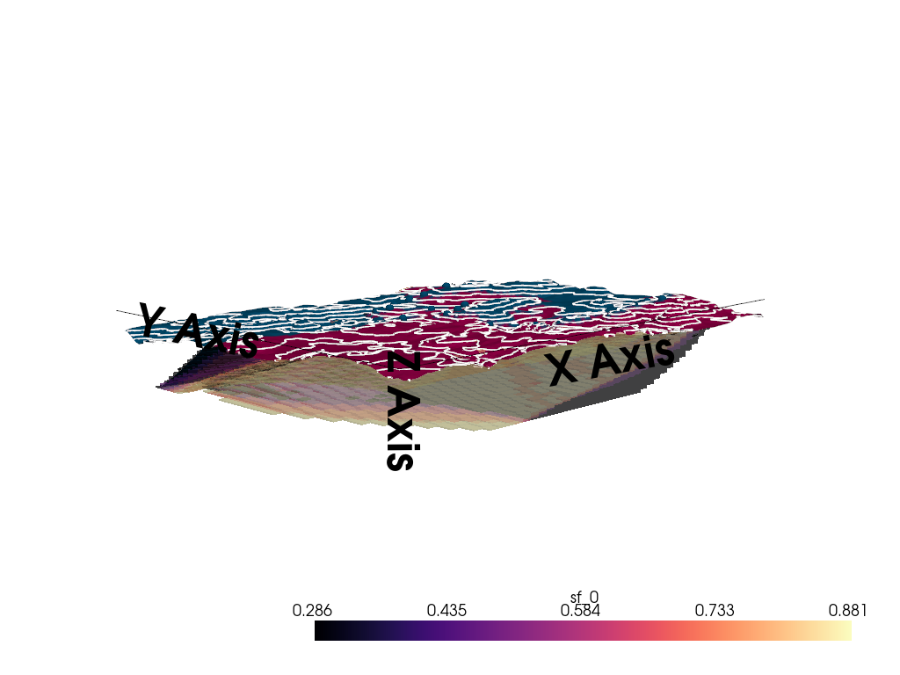
Computing prior probability fields...
Active grids: GridTypes.DENSE|NONE
Setting Backend To: AvailableBackends.PYTORCH
Using sequential processing for 1 surfaces
/home/leguark/.venv/2025/lib/python3.13/site-packages/torch/utils/_device.py:103: UserWarning: Using torch.cross without specifying the dim arg is deprecated.
Please either pass the dim explicitly or simply use torch.linalg.cross.
The default value of dim will change to agree with that of linalg.cross in a future release. (Triggered internally at /pytorch/aten/src/ATen/native/Cross.cpp:63.)
return func(*args, **kwargs)
Setting Backend To: AvailableBackends.PYTORCH
Using sequential processing for 1 surfaces
Setting Backend To: AvailableBackends.PYTORCH
Using sequential processing for 1 surfaces
Setting Backend To: AvailableBackends.PYTORCH
Using sequential processing for 1 surfaces
Setting Backend To: AvailableBackends.PYTORCH
Using sequential processing for 1 surfaces
Setting Backend To: AvailableBackends.PYTORCH
Using sequential processing for 1 surfaces
Setting Backend To: AvailableBackends.PYTORCH
Using sequential processing for 1 surfaces
Setting Backend To: AvailableBackends.PYTORCH
Using sequential processing for 1 surfaces
Setting Backend To: AvailableBackends.PYTORCH
Using sequential processing for 1 surfaces
Setting Backend To: AvailableBackends.PYTORCH
Using sequential processing for 1 surfaces
Setting Backend To: AvailableBackends.PYTORCH
Using sequential processing for 1 surfaces
Setting Backend To: AvailableBackends.PYTORCH
Using sequential processing for 1 surfaces
Setting Backend To: AvailableBackends.PYTORCH
Using sequential processing for 1 surfaces
Setting Backend To: AvailableBackends.PYTORCH
Using sequential processing for 1 surfaces
Setting Backend To: AvailableBackends.PYTORCH
Using sequential processing for 1 surfaces
Setting Backend To: AvailableBackends.PYTORCH
Using sequential processing for 1 surfaces
Setting Backend To: AvailableBackends.PYTORCH
Using sequential processing for 1 surfaces
Setting Backend To: AvailableBackends.PYTORCH
Using sequential processing for 1 surfaces
Setting Backend To: AvailableBackends.PYTORCH
Using sequential processing for 1 surfaces
Setting Backend To: AvailableBackends.PYTORCH
Using sequential processing for 1 surfaces
Setting Backend To: AvailableBackends.PYTORCH
Using sequential processing for 1 surfaces
Active grids: GridTypes.DENSE|TOPOGRAPHY|NONE
Setting Backend To: AvailableBackends.PYTORCH
Using sequential processing for 1 surfaces
/home/leguark/PycharmProjects/gempy_viewer/gempy_viewer/modules/plot_3d/drawer_surfaces_3d.py:38: PyVistaDeprecationWarning:
../../../gempy_viewer/gempy_viewer/modules/plot_3d/drawer_surfaces_3d.py:38: Argument 'color' must be passed as a keyword argument to function 'BasePlotter.add_mesh'.
From version 0.50, passing this as a positional argument will result in a TypeError.
gempy_vista.surface_actors[element.name] = gempy_vista.p.add_mesh(
Computing posterior probability fields...
Active grids: GridTypes.DENSE|NONE
Setting Backend To: AvailableBackends.PYTORCH
Using sequential processing for 1 surfaces
Setting Backend To: AvailableBackends.PYTORCH
Using sequential processing for 1 surfaces
Setting Backend To: AvailableBackends.PYTORCH
Using sequential processing for 1 surfaces
Setting Backend To: AvailableBackends.PYTORCH
Using sequential processing for 1 surfaces
Setting Backend To: AvailableBackends.PYTORCH
Using sequential processing for 1 surfaces
Setting Backend To: AvailableBackends.PYTORCH
Using sequential processing for 1 surfaces
Setting Backend To: AvailableBackends.PYTORCH
Using sequential processing for 1 surfaces
Setting Backend To: AvailableBackends.PYTORCH
Using sequential processing for 1 surfaces
Setting Backend To: AvailableBackends.PYTORCH
Using sequential processing for 1 surfaces
Setting Backend To: AvailableBackends.PYTORCH
Using sequential processing for 1 surfaces
Setting Backend To: AvailableBackends.PYTORCH
Using sequential processing for 1 surfaces
Setting Backend To: AvailableBackends.PYTORCH
Using sequential processing for 1 surfaces
Setting Backend To: AvailableBackends.PYTORCH
Using sequential processing for 1 surfaces
Setting Backend To: AvailableBackends.PYTORCH
Using sequential processing for 1 surfaces
Setting Backend To: AvailableBackends.PYTORCH
Using sequential processing for 1 surfaces
Setting Backend To: AvailableBackends.PYTORCH
Using sequential processing for 1 surfaces
Setting Backend To: AvailableBackends.PYTORCH
Using sequential processing for 1 surfaces
Setting Backend To: AvailableBackends.PYTORCH
Using sequential processing for 1 surfaces
Setting Backend To: AvailableBackends.PYTORCH
Using sequential processing for 1 surfaces
Setting Backend To: AvailableBackends.PYTORCH
Using sequential processing for 1 surfaces
Setting Backend To: AvailableBackends.PYTORCH
Using sequential processing for 1 surfaces
Active grids: GridTypes.DENSE|TOPOGRAPHY|NONE
Setting Backend To: AvailableBackends.PYTORCH
Using sequential processing for 1 surfaces
/home/leguark/PycharmProjects/gempy_viewer/gempy_viewer/modules/plot_3d/drawer_surfaces_3d.py:38: PyVistaDeprecationWarning:
../../../gempy_viewer/gempy_viewer/modules/plot_3d/drawer_surfaces_3d.py:38: Argument 'color' must be passed as a keyword argument to function 'BasePlotter.add_mesh'.
From version 0.50, passing this as a positional argument will result in a TypeError.
gempy_vista.surface_actors[element.name] = gempy_vista.p.add_mesh(
Summary and Conclusions¶
In this tutorial, we’ve successfully: 1. Configured a GemPy model with multiple grids (Centered for Gravity, Custom for EnMap). 2. Defined a joint Bayesian model with multiple likelihood functions. 3. Performed a Likelihood Balance Check to ensure fair data integration. 4. Inferred subsurface dips and densities from joint observations.
# **Joint Inversion Workflow Recap:**
#
# 1. Data Preparation (Gravity + EnMap)
# 2. Grid Setup (Multi-grid)
# 3. Prior Definition (Geological constraints)
# 4. Likelihood Formulation (Noise models)
# 5. Balance Diagnostic (Crucial for joint!)
# 6. MCMC Inference (NUTS)
# 7. Posterior Analysis & Visualization
# sphinx_gallery_thumbnail_number = 8
Total running time of the script: (0 minutes 28.238 seconds)